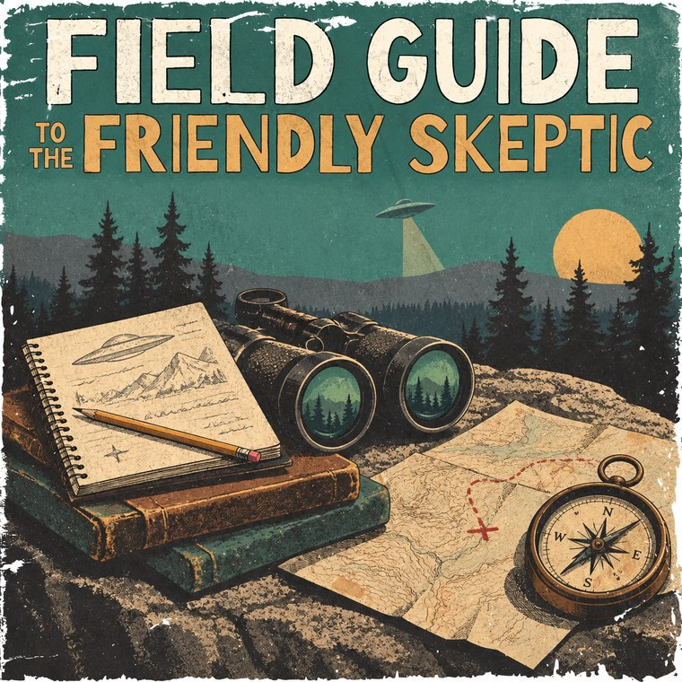

The podcast
Flying Saucers for the Friendly Skeptic
A beginner-friendly show about UFOs and UAP. We look at the famous cases and the evidence behind them.
Listen now →
The field guide
Field Guide for the Friendly Skeptic
A self-guided museum of cases, a timeline and the declassified files. Each case notes what's documented, what's claimed and the best explanation so far.
Start exploring →